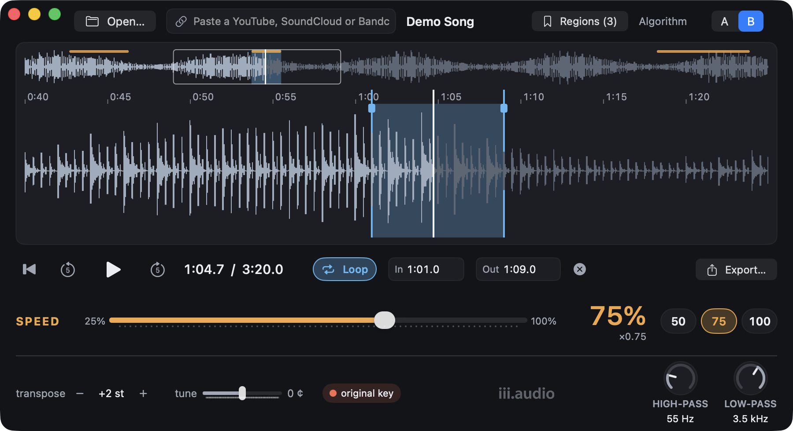

Slow a song down without changing its key, loop the hard part, and work it out by ear. Hold the pointer over any control for a tooltip.

1 2 3 4 5 6 7 8 9 10 11 12 13 14GawdSpeed remembers each song: speed, key, filters, loop, regions and where you were come back when you open it again. ⌘Z undoes changes to the controls and the loop.
| Allow speeds above 100% | Up to 150%, for checking a part at tempo. |
| Snap loop points to zero crossings | On by default; avoids clicks at the loop point. |
| Loop pre-roll | Starts each pass up to 2 s early, for a run-up. |
| Follow the playhead | Page by page, or smooth scrolling. |
| Play through | Which speakers, headphones or interface to use. |
| Import from websites | Where yt-dlp is, update it, where downloads go. |
| Algorithm A: lighter preset | Uses less processing; try it on an older Mac. |
| Space | Play / pause |
| Return | Back to the loop start, or the song’s start |
| ← → | Back / ahead 1 s (⇧ 5 s, ⌥ 0.1 s) |
| − = | Slower / faster by 5% (⌥ 1%) |
| [ ] | Transpose down / up a semitone |
| ⌥[ ⌥] | Tune down / up 5 cents |
| ⌘0 | Back to the original key |
| I O | Loop start / end at the playhead |
| L | Loop on / off |
| Esc | Clear the highlight |
| ⌘D | Save the highlight as a region |
| ⌘+ ⌘− | Zoom in / out |
| ⌘O ⌘U ⌘E | Open a file / a link · Export |
| ⌘Z ⇧⌘Z | Undo / redo |
| ? | Show all shortcuts in the app |
At 100% speed with no key change, GawdSpeed plays the original audio untouched. Only download audio you have the right to use. Help ▸ Show Tips replays the first-run tips.